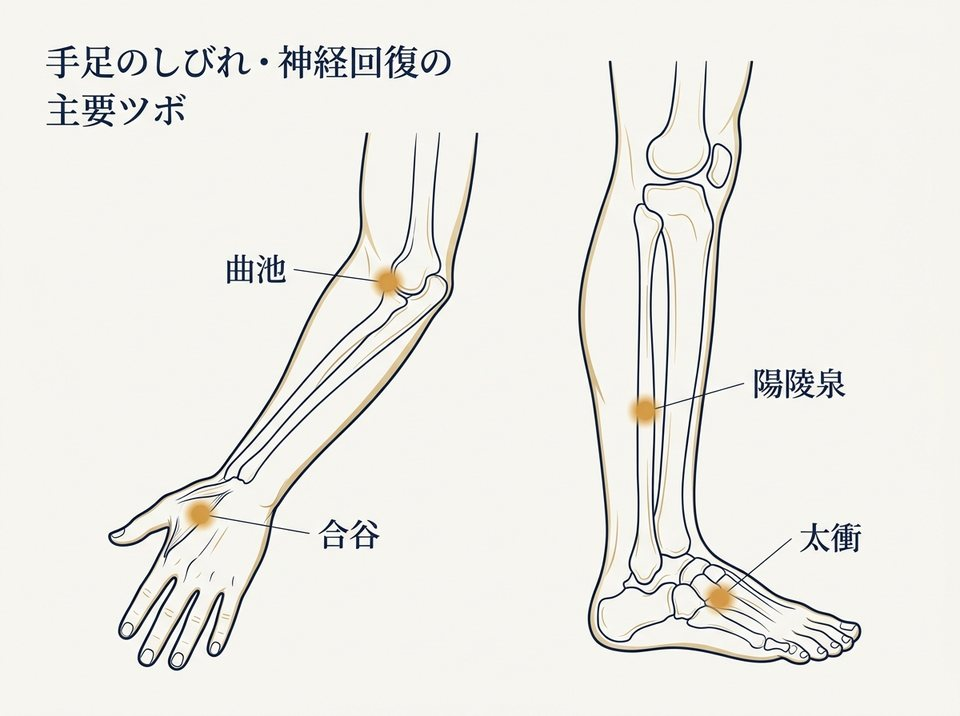

良性発作性頭位めまい症の鍼灸
頭を動かした瞬間の回転性めまいに対し、首肩の緊張緩和と内耳循環・自律神経調整、寝返り運動で再発予防を支援します。


院長YouTube解説・関連動画
 ▶ YouTube
▶ YouTubeなぜめまい（PPPD）が鍼灸で良くなるのか解説
首の緊張と脳の過敏性に着目し、施術間隔を調整しながらめまいを落ち着かせる仕組みを解説している動画です。
動画を見る（YouTubeへ） →良性発作性頭位めまい症はめまいを生じる病気
良性発作性頭位めまい症は、内耳の耳石器という部分にある炭酸カルシウムの塊の耳石が、普段生活している日常でする動きの中の何かの原因で剥がれ落ちてしまい、三半規管の中に入り込んでしまうことによって、めまいが起きる病気です。
良性発作性頭位めまい症はBPPVとも言われます。突然発症するめまいを主な症状とする一般的な内耳障害で、通常、特定の頭の動きや体位変換によってめまいが起きます。症状は１秒から１分程度持続し、自然に改善することが多いです。
原因は、耳石が正常な位置から外れて別の部分に移動すること
原因は内耳の三半規管になる耳石というカルシウムの塊が正常な位置から外れて別の部分に移動することです。耳石の異常な位置付けが頭の動きや体位変換によってめまいを起こすのです。
耳石の異常な動きは、加齢や頭部外傷、耳の感染、長期のヘッドホンの使用などによって引き起こすことがあります。
三半規管は耳の奥にあります。半規管と呼ばれる三つの車輪のような器官がつながった組織です。この三半規管の中はリンパ液で満たされています。
そこで頭が動くと、頭が動いたことに応じてリンパ液も三半規管の中を流れます。この動きを感知することで、人間は歩いたり走ったりすることができるというように三半規管は体全体のバランスを取っています。
その三半規管に耳石という炭酸カルシウムが入り込んでしまうと、リンパ液の流れが乱れが起きてしまいます。
その結果、感覚器と実際の体の動きが合わなくなります。この脳神経伝達のメカニズムのずれによって、めまいが生じると考えられています。 そのずれによって起きるめまいが良性発作性頭位めまい症の症状です。
良性発作性頭位めまい症の症状は回転性めまい
良性発作性頭位めまい症の症状は、回転性のめまいです。これはグルグルと目を回した時のような目の回り方のめまいです。
良性発作性頭位めまい症は、炭酸カルシウムに耳石が入り込んだ半規管でリンパ液の流れが異常を起こし、めまいが起きる病気です。
この病気は、特定の方向に頭を動かしたときにだけ症状が見られるということが最大の特徴です。その際、患者自身の自分の意思と関係なく眼球が動く現象である眼振が起こるということも特徴です。
眼振は目を回した状態に近い状態になるため、乗り物酔いにも似た嘔吐感があることもあります。 耳鳴りや聞こえづらいなどの症状はなく、めまいだけ生じます。
①めまい
頭を動かすと突然発症し、数秒から１分程度持続するめまいが起こります。
②バランス喪失
めまいの影響で歩行が不安定になることもあります。
③吐き気や嘔吐
めまいが激しい場合に吐き気や嘔吐がともなうことがあります。
④目の異常な動き
ニスタグムスとも言われています。めまいが発生するときに目が自然に横に動きます。
⑤立ちくらみ
立ち上がると一時的にめまいが発生することがあります。内耳の三半規管にある異常な位置で起こる耳の動きや体位変換によって三半規管の中を満たしている内リンパ液が異常な流れを起こすことによって平衡感覚を司る神経が刺激され、めまいを引き起こすのです。
タイプは２種類
・三半規管型結石
耳石が三半規管内に入り込むことによって三半規管内を耳石がめぐってめまいが発生します。耳石の動きが止まるとリンパ液の流れが止まるため頭を動かさなければめまいは改善します。
・クプラ結石
クプラと言ってリンパ液の流れを感じる神経があります。この神経に耳石が付着することによって起こるめまいです。耳石が付着したクプラが横向きになるような状態になることで重力によってクプラが刺激され回転するようなめまいを発症します。
持続時間は大体２分以上と長く、耳石が付着したクプラが縦向きになると耳石が離れてめまいが改善します。
めまいという症状には種類があります。
・回転性めまい
・浮動性めまい
・立ちくらみのようなめまい
それぞれの症状と原因が異なります。
・回転性めまい
自分や周囲が回っているような感覚になります。耳が原因で起こることが多く、耳鳴りや難聴を伴う場合はメニエール病や突発性難聴が疑われます。耳鳴りや難聴が伴わない場合は良性発作性頭位めまい症です。メニエール病は内耳のリンパ液が過剰に溜まり、蝸牛や三半規管の機能が乱れることで発症します。簡単にいうと内耳のむくみなのです。めまいは３０分以上続き、耳が詰まった感じ、難聴、耳鳴りが同時に起こります。発作が繰り返されると耳鳴りが残る可能性があるため早期改善が大事です。
浮動性めまいと動揺性めまいは当院でも多いです。浮動性めまいは体がふわふわ浮くような感覚になり姿勢を保つのが難しいです。まっすぐ歩けないといった症状が現れます。
浮動性めまいは中枢性、全身性、薬剤、性精神性の4つに分かれており、それぞれ原因が違います。
・中枢性めまい
小脳や脳幹に障害が生じます。脳梗塞や脳出血の原因になり、症状には嘔吐や頭痛、手足の痺れ、脱力があります。
・全身性めまい
体全体の問題から生じます。原因は自律神経、貧血、発熱だと考えられています。院長は全身性めまいの施術が非常に得意です。
・薬剤性めまい
薬の副作用によって起こるめまいです。抗生物質、精神薬、降圧剤などが関与していることがあります。
・心因性めまい
精神的なストレスや自律神経の乱れが原因です。症状が長く続く場合はうつ病や自律神経失調症につながる可能性があります。心療内科に行くケースが非常に多いです。
・立ちくらみのようなめまい
脳の血流が一時的に不足することで発症するめまいで、自律神経が乱れると血圧の調整が難しくなり症状が出やすくなります。
めまいにとるべき栄養素
画像の説明を入力してください
めまいに有効な栄養素は亜鉛、ビタミンB、ビタミンCです。めまいに良好とされています。
亜鉛は免疫機能の向上や細胞の修復に役立ち、内耳の健康を維持します。
ビタミンBは神経伝達の生成を助け、めまいや神経の緩和に役立ちます。
ビタミンCは抗酸化作用があり、細胞のダメージを防ぐことで内耳の健康を維持します。
なかなか改善しない人は耳ではないところから来ていることもあります。このようなケースは鍼灸でよく見るケースのため、悩んだ時はツボを押したり鍼で改善を目指しましょう。
良性発作性頭位めまい症は予防が大切です。予防には、まず、耳石を三半規管にためないことが重要です。
長時間同じ姿勢でいたり頭を動かさずにいたりすることが原因と考えられるため、そのような状態が続くことを避けることが有効です。
また同じ方向で横向きに寝ない事も大切です。リモートワークの増加などによって同じ姿勢で長時間の作業が続くことが多い人は、意識して適度に姿勢を変えリフレッシュすることもとても大切です。
予防には、寝返り運動を行うことも有効です。これは朝起きた後と夜寝る前に布団で行う運動です。左向き・あおむけ・ 右向き・あおむけの順番で各10秒ずつ数え姿勢を変えます。これを何回か続ける運動をすることが予防に効果があるという報告があります。
詳細解説
良性発作性頭位めまい症の詳しい医学解説・施術方針
▼
詳細解説
良性発作性頭位めまい症の詳しい医学解説・施術方針
耳石が落ち着いても「フワフワ感・再発不安」が残るメカニズム
寝返りや起き上がりで回転性めまいが起きるBPPVでは、発作への恐怖から無意識に首を固めてしまい、後頭下筋群や胸鎖乳突筋の過緊張による頸性めまい・自律神経失調を併発しやすいのが特徴です。
当院では首を無理に動かさず、後頭部・手足の自律神経調整穴を用いて緊張の連鎖を解き、めまい後のふらつき感や再発リスクの軽減を目指します。
なぜ鍼灸で改善へ向かうのか？（作用機序の図解）
良性発作性頭位めまい症に対する鍼灸は、脳循環・三叉神経血管系と神経可塑性の調整機序を通じて、お体本来の回復力を引き出します。
百会・風池・合谷などの経穴刺激が三叉神経や大後頭神経・体性感覚路へ穏やかに作用します。
脳幹の自律神経中枢やセロトニン・GABA系のバランスを整え、神経の過敏発火を鎮めます。
後頭下筋群や首深部のこわばりを解き、頭部・内耳・顔面周囲の血流環境をサポートします。
神経回路の再学習（可塑性）と睡眠の質を高め、専門医の治療やリハビリの土台を支えます。
良性発作性頭位めまい症に用いられる代表的なツボとセルフケア

📌 詳細データ・ツボ一覧表を開く▼
| ツボ名（経穴） | 位置の目安 | 主な狙い・役割 | セルフケアの注意点 |
|---|---|---|---|
| 百会（ひゃくえ） | 両耳上端を結ぶ線と正中線の交点 | 頭部循環・脳卒中後ケア・パーキンソン病の睡眠緩和 | 高血圧発作時・頭部外傷直後は避ける |
| 風池（ふうち） | 後頭部の生え際、僧帽筋外側のくぼみ | 片頭痛予防・後頸部筋緊張緩和・頭部血流改善 | 頸部動脈に近いため強いグリグリ押し厳禁 |
| 合谷（ごうこく） | 手の甲、親指と人差し指の骨が交わる手前 | 頭顔面部の要穴。片頭痛・顔面神経麻痺の遠隔調整 | 妊娠中は強い刺激を避ける |
| 翳風（えいふう） | 耳たぶの後ろ、乳様突起と下顎骨の間のくぼみ | 顔面神経出口近傍の循環改善・ベル麻痺ケア | 神経・血管が集中するため強圧を避け温め中心に |
| 陽陵泉（ようりょうせん） | 膝外側、腓骨頭の前下方のくぼみ | 脳卒中後の痙縮・パーキンソン病の筋固縮ケア | 腓骨神経近接のためしびれが出る強圧は回避 |
| 太衝（たいしょう） | 足の甲、親指と人差し指の骨が交わる手前 | ストレス性片頭痛・のぼせ・緊張緩和 | 妊娠中は刺激を避ける |
日常で心がけたいセルフケアと避けたいNG行動
✓ おすすめのセルフケア
- 起き上がる際は一度横向きになってからゆっくり頭を起こす
- 枕の高さを極端に低くしすぎず、首に無理のない姿勢で眠る
- 水分補給と規則正しい睡眠リズムを保つ
✕ 悪化しやすいNG行動
- めまい発作中に自己流で激しく頭を振る・強い首ストレッチを行う
- 首をまったく動かさない極端な安静を何週間も続ける
- 手足の麻痺・ろれつが回らない・激しい頭痛を伴うのに様子見する（即受診）
査読論文が示す「脳神経領域の補完ケア（片頭痛予防・脳卒中後リハ・パーキンソン病睡眠・顔面神経麻痺）×鍼灸」の科学的エビデンス
国際的な医学データベース（PubMed・Cochrane等）で報告されている脳神経領域の補完ケア（片頭痛予防・脳卒中後リハ・パーキンソン病睡眠・顔面神経麻痺）領域の代表的な査読済み鍼灸研究です（標準治療との併用や研究上の限界を含めて掲載しています）。
📚 査読論文データ・出典表を開く▼
| 年・研究デザイン | 対象・規模 | 主な結果と臨床的意義 | 限界・出典 |
|---|---|---|---|
| 2016年 Cochraneレビュー | 反復性片頭痛 22 RCTs（n=4,985） | 無治療比で頻度半減41% vs 17%（RR 2.40）、予防薬比3か月57% vs 46%（RR 1.24）かつ副作用脱落OR 0.27と優位。 | 1年以上の長期検証は不足。 Cochrane (PMID: 27351677) |
| 2016年 Cochraneレビュー | 脳卒中後リハ 31 RCTs（n=2,257） | 通常リハ併用でBarthel Index（MD 9.19）・Fugl-Meyer（MD 6.16）・嚥下・疼痛改善を示唆、重篤な有害事象なし。 | GRADE低〜非常に低。標準リハビリの補完として位置づけ。 Cochrane (PMID: 27562656) |
| 2024年 シャム対照RCT | パーキンソン病の睡眠障害 78名解析 | 抗PD薬併用下でPDSS睡眠尺度が4週時+19.75点・8週時+20.24点とシャム比有意改善（P<0.001）。 | 単施設・小規模・8週間追跡。標準薬併用が前提。 JAMA Netw Open (PMID: 38922617) |
| 2013年 多施設RCT | ベル麻痺（顔面神経麻痺）338名（ステロイド併用） | 6か月時の顔面神経機能回復は得気手技群が対照鍼群より優位（調整OR 4.16）、QOLも改善。 | 全例プレドニゾン併用。急性期の過剰顔面通電は回避配慮。 CMAJ (PMID: 23439629) |
医療機関の受診を最優先すべきサイン（レッドフラッグ）
⚠ 専門医の受診・検査を最優先してください
脳卒中FASTサイン（顔のゆがみ・片腕の脱力・ろれつ困難は即119番）、雷鳴頭痛（突然の最悪の激痛）、発熱・項部硬直・意識障害やけいれん、急性顔面麻痺＋耳の強い痛みや水疱（ラムゼイ・ハント症候群は72時間以内の受診必須）がある場合は、直ちに救急・脳神経内科を受診してください。
参考文献・出典
- 銀座そうぜん鍼灸院「良性発作性頭位めまい症の公式解説ページ」
- 2016年 Cochraneレビュー（反復性片頭痛 22 RCTs（n=4,985））— Cochrane (PMID: 27351677)
- 2016年 Cochraneレビュー（脳卒中後リハ 31 RCTs（n=2,257））— Cochrane (PMID: 27562656)
- 2024年 シャム対照RCT（パーキンソン病の睡眠障害 78名解析）— JAMA Netw Open (PMID: 38922617)
- 2013年 多施設RCT（ベル麻痺（顔面神経麻痺）338名（ステロイド併用））— CMAJ (PMID: 23439629)
06. よくある質問（FAQ）
よくあるご質問を見る（2件）
▼
06. よくある質問（FAQ）
よくあるご質問を見る（2件）
Q. 耳石を戻す運動と鍼灸は併用できますか？
はい。耳鼻科での頭位変換療法と並行し、首肩の緊張緩和や自律神経調整を行うことでふらつきや再発不安の軽減に役立ちます。
Q. 自宅でできる予防法はありますか？
症状が落ち着いている時期に、起床後と就寝前に左向き・仰向け・右向き・仰向けを各10秒ずつ行う寝返り運動が予防として知られています。
あわせて読まれる関連疾患（脳神経のお悩み）
脈打つ強い痛みや光・音への過敏を伴う片頭痛に対し、首肩の深層筋と自律神経を整えて発作頻度と負担の軽減を目指します。
末梢性顔面神経麻痺に対し、早期の医療機関受診を最優先としたうえで、顔面の血流促進と後遺症予防を支援します。
突然の激しい回転性めまいが数日続く前庭神経の障害です。専門医の鑑別・急性期治療後、回復期のふらつきや自律神経を整えます。
小脳の動脈閉塞で強いめまいやふらつきを起こす脳卒中。発症時は救急搬送を最優先に、回復期後遺症の補完ケアを支えます。
内リンパ水腫によるめまい発作や耳鳴り・耳閉感に対し、聴宮などのツボと首・顎の深層筋ケアで内耳循環を支援します。
自分の体臭や口臭で周囲に迷惑をかけていると過度に悩み続ける状態。精神科・心療内科の専門治療を最優先に、安定期の緊張緩和を支えます。
CLINICAL RECOVERY CASES
✨ 実際の臨床改善事例・回復経過を見る
銀座本院をはじめ各院での実際の改善事例を症状別に絞り込んでご確認いただけます。
おひとりで悩まず、まずはご相談ください
銀座本院・川口・大宮・横浜・博多・田無の各院でご予約を承っております。